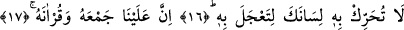
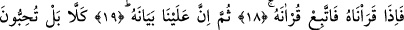
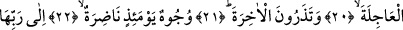
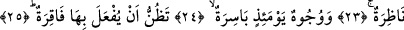
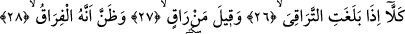
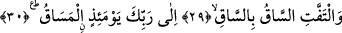
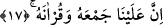

VAHYİ ÇARÇABUK ALMAK İÇİN
DİLİNİ KIMILDATMA
16. (Rasûlüm!) onu (vahyi) çarçabuk almak için dilini kımıldatma.
17. Şüphesiz onu, toplamak (senin kalbine yerleştirmek) ve onu okutmak bize
âiddir.
18. O hâlde, biz onu okuduğumuz zaman, sen onun okunuşunu takip et.
19. Sonra şüphen olmasın ki, onu açıklamak da bize âiddir.
20. Hayır! Doğrusu siz, çarçabuk geçeni (dünya hayatını ve nimetlerini) seviyor,
21. Âhireti bırakıyorsunuz.
22. Yüzler vardır ki, o gün ışıl ışıl parıldayacaktır.
23. Rablerine bakacaklardır (O’nu göreceklerdir).
24. Yüzler de vardır ki, o gün buruşacaktır;
25. Kendilerinin, bel kemiklerini kıran bir felâkete uğratılacağını sezeceklerdir.
26. Artık gözünüzü açın! Ne zaman ki can köprücük kemiğine dayanır,
27. «Tedâvi edebilecek kimdir?» denir.
28. (Can çekişen) bunun gerçek bir ayrılış olduğunu anlar.
29. Ve bacak bacağa dolaşır.
30. İşte o gün sevkedilecek yer, sâdece Rabbinin huzûrudur.
16)“(Rasûlüm) Onu” Kur’an’ı “çarçabuk almak için” daha vahyi alamadan elinden
kaçar korkusuyla acele ile Kur’an’ı ezberine almak için -Cebrâil Kur’an’ı henüz
okumakta ve sana vahyetmekte iken- “dilini kımıldatma.”